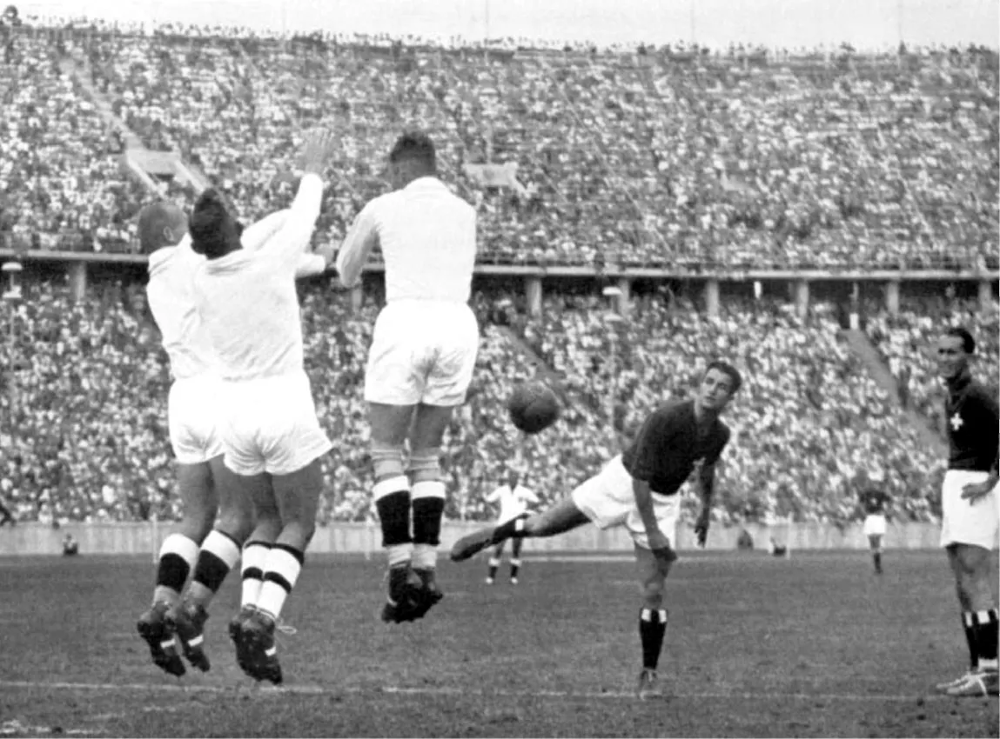

Inicialmente, o handebol era jogado no campo ao ar livre, com 11 jogadores. Em locais fechados, como o salão, por exemplo, o handebol foi introduzido por G. Wallström, na Suécia, em 1910. Em 1919, o handebol foi desenvolvido pelo atleta e professor de Educação Física, o alemão Karl Schelenz (1890-1956). O handebol é um esporte coletivo que envolve duas equipes com o objetivo de vencer uma à outra. A equipe vencedora é aquela que marcar o maior número de fazer gols na baliza adversária. No handebol, a bola é jogada com as mãos, por meio de ações de passes e lançamentos. O nome dessa modalidade esportiva é proveniente da língua inglesa, visto que “hand” significa “mão” e “ball” significa bola.
Saiba mais em:
O handebol vem ganhando cada vez mais visibilidade no cenário internacional, e a relação dos principais jogadores da modalidade tem se tornado um tópico relevante nas conversas esportivas. Dessa forma, se destacam: Mikkel Hansen, Nikola Karabatić, Mathias Gidsel, Elias Ellefsen, Domagoj Duvnjak, dentre vários outros.
Saiba mais em:
O handebol é marcado por competições de alto nível tanto entre seleções quanto entre clubes. No cenário internacional, os destaques são o Campeonato Mundial de Handebol, realizado a cada dois anos pela IHF, e os Jogos Olímpicos, que reúnem as melhores seleções a cada quatro anos. Entre os clubes, o torneio mais prestigiado é a EHF Champions League, com os principais times da Europa, além do Super Globe, considerado o Mundial de Clubes. No campo continental, o Campeonato Europeu (EHF EURO) se destaca pelo alto nível técnico, enquanto torneios como o Pan-Americano, o Campeonato Africano e o Campeonato Asiático fortalecem o esporte em outras regiões do mundo.
Saiba mais em: